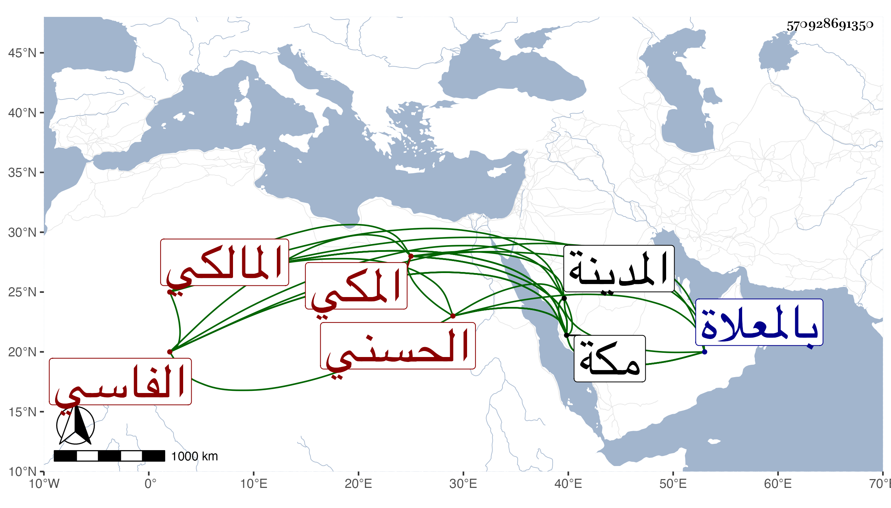

0902Sakhawi.DawLamic.ITO20230111-ara1.EIS1600.570928691350
Biography ID: 570928691350
388
عبد الرحمن بن أبي الخير محمد بن أبي عبد الله محمد بن محمد بن عبد الرحمن التقي أبو زيد وأبو الفضل الحسني الفاسي ثم المكي المالكي . ولد في ربيع الأول سنة إحدى وأربعين وسبعمائة بمكة وأجاز له الجمال المطري وأسمعه أبوه بالمدينة شيئا من آخر الشفا على الزبير الاسواني وأجاز له ، وكذا سمع من أبيه ولبس منه الخرقة كما أخبر بذلك كله ، قال التقي الفاسي في تاريخه وسمع في الخامسة على أبيه الملخص للقابسي وعلى إبراهيم بن الكمال محمد ابن نصر الله بن النحاس أحاديث من مسند ابن عباس من مسند أحمد وعلي المحدث نور الدين الهمداني والشهاب الهكاري والتاج ابن بنت أبي سعد والعز ابن جماعة في آخرين منهم خليل المالكي وعليه وعلى موسى المراكشي وغير واحد تفقه ، ولزم موسى مدة سنين وتصدى بمكة للتدريس والافتاء زيادة على ثلاثين سنة وانتفع الناس به في ذلك كثيرا ، وكان جيد المعرفة في الفقه مشاركا في غيره من فنون العلم حسن التدريس والفتيا جليل القدر له وقع في النفوس ذا ديانة وعبادة ومحاسن كثيرة سمعت منه وقرأت عليه الموطأ وغيره وانتفعت به في معرفة المذهب وهو ممن أذن لي في الافتاء والتدريس . مات في ليلة الأربعاء منتصف ذي القعدة سنة خمس بمكة ودفن بالمعلاة في قبر الشيخ أبي الكوط بوصية منه وكثر الأسف عليه لوفور محاسنه ، وذكره شيخنا في إنبائه باختصار فقال إنه عنى بالفقه فمهر فيه ودرس وأفتى أكثر من أربعين سنة ، وكان نبيها في الفقه مشاركا في غيره ، وكذا ذكره المقريزي في عقوده وأنه اجتمع به في سنة سبع وثمانين وأفاده .
